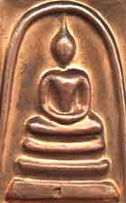
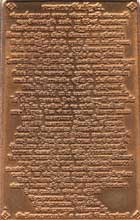

-
Finding your way around
- I'm lost! How do I find my way around this website? (link to "Help")
- What are some good starting places in this website? (link to "Beginnings")
- What is Theravada Buddhism? (link to "What is Theravada Buddhism?")
- Which suttas should I read? (link to "Befriending the Suttas")
- How should I read the suttas? (link to "Befriending the Suttas")
-
General questions about the website
- What is Access to Insight?
- How did Access to Insight start?
- How can I contact you?
- How did you decide which texts to include on the website?
- Why don't you have translations of ALL the suttas from the Pali canon?
- Why don't you have such-and-such a sutta (or article)?
- Why don't you have any translations or articles by so-and-so?
- Why don't you have any translations or articles in languages other than English?
- Whom can we thank for making all these texts available?
- Who translated the suttas on this website?
- How can I help Access to Insight?
- May I make a donation to support this project?
- What is the significance of the graphic on the home page?
-
Using the website
- How do I download the entire website? (link to "Downloading the Entire Website")
- How do I download and uncompress those pesky ZIP files? (link to "Working with ZIP files")
- What's the difference between the various versions of Access to Insight?
- I have a [cellphone/ebook-reader/other cool device]. How do I read Access to Insight on it? (link to "ATI on many devices")
-
Copyright and terms of use
- Are these texts protected by copyright?
- May I copy your pages onto my website?
- How do I reformat a page while also honoring the terms of the copyright license?
- May I sell copies of materials from your website in order to raise money for a non-profit cause?
- May I sell copies of materials from your website if I charge just enough to recover the costs of printing, etc.?
- May I ask people to make a "suggested donation" in exchange for copies of these texts?
- May I include a short excerpt of a text from your website in a publication that I plan to sell?
- How should I cite references to Access to Insight?
- Miscellaneous
General questions about the website
- What is Access to Insight?
-
Access to Insight is an HTML website dedicated to providing accurate, reliable, and useful information concerning the practice and study of Theravada Buddhism, as it has been handed down to us through both the written word of the Pali canon and the living example of the Sangha.
Everything available at Access to Insight is offered in full cooperation with the authors, translators, and publishers concerned, with the clear understanding that none of it is to be sold. Please help yourself to whatever you find useful. (For more about the copyright status of materials on the website, please read "Copyright and Related Issues.")
The name "Access to Insight" refers to the collection of files that reside on the Internet domain www.accesstoinsight.org. The domain name is owned by the Barre Center for Buddhist Studies, which also manages the website.
- How did Access to Insight start?
-
In early 1993, with the help of the Barre Center for Buddhist Studies, John Bullitt set up a dialup computer bulletin board service (BBS) in his home in an effort to see if networked computers might be useful as a support for other students and practitioners of Buddhism. Initially dubbed "BCBS OnLine," the BBS soon joined Fidonet, an international network of dialup BBS's, and adopted the name "Access to Insight" (node 1:322/750). By the end of 1993 it joined DharmaNet, Barry Kapke's California-based Buddhist BBS network (node 96:903/1). In early 1994 DharmaNet launched the Dharma Book Transcription Project, of which Bullitt served as librarian, and under whose auspices about a hundred high-quality books on Buddhism were transcribed to computer through the dedicated efforts of an international team of volunteer transcribers and proofreaders. These books were soon distributed via DharmaNet to scores of BBS's around the world. In mid-1994 a dialup Internet e-mail connection was installed that allowed anyone on the Internet to retrieve these books via an e-mail file server. This proved to be a popular service. By late 1994 the BBS — now independent of BCBS — spent far more of its time serving file requests from around the world via the Internet than in handling the requests of local callers. Internet users from far and wide were coming to depend on Access to Insight's now rickety and overworked '386 computer as their link to information — both the timely and the timeless — about Buddhism. In March 1995 this website was born; the following November the BBS was closed down.
Over the next eighteen years Access to Insight steadily grew from a modest collection of two or three suttas and a handful of articles into an extensively indexed and cross-referenced library of more than one thousand suttas and several hundred articles and books. By the end of 2013 this growth subsided and it settled into "retirement" as a static website. In 2017 Bullitt transferred ownership of the domain name and management of the website to BCBS.
To explore ATI's history in detail, see the archives of old news summaries.
- How can I contact you?
-
If you have a question, please first check to see if it is already answered in the FAQ, the Help file, or the Indexes.
If you have questions about the content of this website — or about the Dhamma in general — please consult a teacher, knowledgeable friend, or one of the online Pali or Dhamma discussion groups.
If you have any questions about copyright that aren't covered in this document, please direct them to the author or prior publisher of the article in question.
If, after reading the above, you still have a pressing need to contact us, you can reach us at: bcbs AT dharma DOT org.
- How did you decide which texts to include on the website?
-
One overarching principle guided my choice of what to include in these pages, and what to leave out: a conviction that the teachings found in the Pali canon are just as relevant today as when they were first put into practice 2,600 years ago. Despite all the obvious material advances in the human world since the Buddha's time, the Four Noble Truths appear to be as vital today as ever: suffering and stress still pervade our lives; the cause still appears to be craving in all its insidious manifestations; and there is no reason to suspect that the Noble Eightfold Path is any less effective today at bringing an end to all that suffering and stress.
The emphasis here is on practice. For the most part I selected books, articles, and sutta translations that I personally found helpful to develop a better understanding of the Buddha's teachings, rather than texts that tend to fuel intellectual debates on abstract philosophical concepts. Beyond these basic principles, it all comes down to a matter of personal taste.
If you are looking for authors or teachers who are not represented on Access to Insight, a simple Google search may be fruitful.
See also: Why don't you have translations of ALL the suttas from the Pali canon?
- Why don't you have translations of ALL the suttas from the Pali canon?
Why don't you have such-and-such a sutta (or article)?
Why don't you have any translations or articles by so-and-so? -
This website aims to be selective rather than comprehensive. It was never my goal to publish translations of every single one of the Tipitaka's 10,000-plus suttas. What you see here is a selection of suttas that meet three criteria: (1) they are, in my opinion, good translations; (2) I personally found them useful; and (3) their copyright holders have provided them for free distribution.
There are many other fine translations of important suttas available in print today, and I encourage you to support their continued publication by purchasing copies. Someday, perhaps, these publishers will make those translations available freely to all. Until then, however, we must learn to make do with what we have. Happily, what we already have is pretty darn wonderful.
The same criteria applied to my selection of books, articles, and other materials on the site.
See also: How did you decide which texts to include on the website?
- Why don't you have any translations or articles in languages other than English?
-
Years ago I decided to limit Access to Insight's content exclusively to the English language, simply because I am fluent only in English. I prefer not to put anything on the website that I can't understand myself.
- Whom can we thank for making all these texts available?
-
My role in assembling Access to Insight was primarily that of facilitator and librarian, helping to bring together under one virtual roof the fruits of the hard work of many people: authors, translators, publishers, transcribers, and proofreaders. The unstinting generosity and commitment to the Dhamma demonstrated by these many contributors continues to amaze and inspire me. If you have found anything of value at Access to Insight please join me in thanking those who have made this website possible:
- Bhikkhu Bodhi, former President of the Buddhist Publication Society in Kandy, Sri Lanka, for allowing many of the BPS's publications (including its Wheel and Bodhi Leaves titles, among others) to be transcribed to computer and distributed on the Internet.
- Thanissaro Bhikkhu (Ajaan Geoff), for kindly making available all his own books and articles, as well as his translations of teachings by many of the great Thai forest masters. Ajaan Geoff has also provided the vast majority of Access to Insight's sutta translations (close to one thousand of them are his).
- The many volunteer transcribers and proofreaders who gave their time and energy to make available digital versions of so many fine Dhamma books: Antony Woods, Barry Kapke, Ben Nugent, Bill Petrow, Blake Smith, Bob Heckel, Bradford Griffith, Chitra Weirich, Christopher Sessums, Colleen McCaffrey, David Savage, Dorothea Bowen, Dimitri Zhelvakov, Eileen Santer, Elba Kunsman, Gary Gunning, Gaston Losier, George Fowler, Greg Smith, Heath Row, Henry Jie, Hugo Gayosso, James Stewart Jane Yudelman, Jason Chang, Jim McLaughlin, Joe Crea, John Dixon, Julian Chase, Kavee Wijay, Laura Wright, Lee Lin Ong, Li Chun, Mahendra Siriwardene, Malcolm Rothman, Mark Blackstad, Matt Klopfstein, Maureen Riordan, Michael Kalyaano, Michael Sproul, Michael Zoll, Myra I. Fox, Oliver First, Olivia Vaz, Pat Lapensee, Patricia Anderson, Peter Jones, Phil Lesco, Philip Jurgens, Philip L. Jones, Raj Mendis, Robert Bussewitz, Robert Kokeny, Sabine Miller, Sean Hoade, Stephen Ball, Steven McPeak, Thiep Sam, Tom Fitton, Vincent Halahakone, Vivek Mohile, and several others who asked to remain anonymous.
- The hundreds of people who have offered helpful criticisms and suggestions over the years, or who have developed software tools that are now part of ATI. A few of these people deserve special note for their outstanding contributions: Binh Anson, AppMagination, Jamie Avera, Jakub Bartovsky, Gabriel Bittar, Emily Bullitt, Mark Byrne, Chan Kian Koon, Chun Hoe Chow, John Fabian, Alexander Genaud, Hugo Gayosso, John Kelly, Bhikkhu Kumara (Liew Chin Leag), Michael Olds, Trevor Rhodes, Larry Rosenfeld, Steve Russell, Andy Shaw, Michael Sproul, Antony Woods, Chandra Yenco, and A. Zuback.
- The many people who have offered their help in the form of technical assistance and financial support over the years.
- Jane Yudelman, for her encouragement in 1992 that got Access to Insight off the ground in the first place, and for her continued advice and support over the years that guided this project to fruition.
Thank you all.
- Who translated the suttas on this website?
The sutta translations were made by many esteemed translators, including: Venerables Bhikkhu Bodhi, Acharya Buddharakkhita, Bhikkhu Khantipalo, Ñanamoli Thera, Ñanavara Thera, Narada Thera, Nyanaponika Thera, Soma Thera, Thanissaro Bhikkhu (Phra Ajaan Geoff), and Sister Vajira; I.B. Horner, John D. Ireland, K.R. Norman, and F.L. Woodward. For a complete list of translators, see "Translations by Translator".
- How can I help Access to Insight?
-
Now that Access to Insight is entering "retirement", there is really only one thing to be done: Study and put into practice the Dhamma teachings described in the suttas, articles, and books on this website. That's what they're here for.
- May I make a donation to support this project?
-
I am no longer receiving donations for Access to Insight. If you feel moved to make a donation to support this work, I invite you to make a donation to any of the charitable institutions affiliated with the authors or translators whose work you find particularly rewarding. Alternatively, you may simply make a donation to the charity of your choice. In the Buddha's words, "Give wherever the mind feels confidence" [SN 3.24].
- What is the significance of the graphic on the home page?
-
The graphic (left) that appears on the home page is a stylized rendition of a copper amulet (below, left) that was made and consecrated in Thailand in 2005. The amulet depicts an image of the Buddha meditating under the arch of a protective deity, or naga, in a design popularized by Somdet Toh (1788-1872).[1] The reverse (below, right) contains the Pali text (in Thai script) of the Jinapañjara Gatha ("The Victor's Cage"; see "A Chanting Guide"), a traditional protective chant that describes a person surrounded on all sides by a field of extraordinary purity and goodness: the Triple Gem, all the past Buddhas, all the Buddha's elder arahant disciples, and — as if that weren't enough — all the suttas. In a dangerous and frightening world it is hard to imagine a safer place in which to dwell.
 But, of course, it is the purity and goodness of the mind that offers the only true protection. By seeking out the company of a kalyanamitta (spiritual friend) and by training oneself to infuse the mind only with what is good and noble, progress on the path of Dhamma is assured. The Victor's Cage — and the amulet on which it appears — thus serves as metaphor and reminder of the admirable qualities of mind that the practicing Buddhist strives to develop. As with the ten recollections, reflecting on the Victor's Cage offers encouragement when the chips are down: I am not alone in this endeavor; I can do this. In times of anxiety and stress, when the mind is most susceptible to wandering off into unskillful states, a recollection like this is sometimes all that's needed to restore the mind to balance and to steer it onwards down the path. And sometimes the familiar feel of a well-worn amulet between one's fingers is enough to do the trick.
My hope is that this website may serve its visitors in much the same way.
Note
- 1.
- I'm grateful to a reader (Lam Cheng Poh) for pointing out that the arch above the Buddha has another possible interpretation. LCP writes:
"Most Thai amulet collectors view the arch as a bell. Somdej Toh was abbot of Wat Rakang, i.e., Bell Temple, and the bell has given its name to the arch. The arch is invariably referred to as a "rakang" in any amulet of this iconography.
"The naga-over-the-Buddha amulets (ie Phra Nakprok) typically feature a 7-headed Mucalinda and are not known to be stylised into an abstract arch.
"I suspect the amulet is issued by one of 3 temples closely associated with Somdet Toh, ie Wat Rakang, Wat Inn and Wat Bangkhunpom, where he made many of these amulets. The Jinapanjara Katha began to be featured on these amulets some 4 years ago, because Somdet Toh was supposed to have used that katha to consecrate all of his amulets. A more likely reason is that the minting technology finally caught up and permitted the katha to be squeezed onto the small surface area."
— from an email received on 28 August 2008.
For more about Somdet Toh see "The Legends of Somdet Toh" and ThailandAmulets.com <http://www.thailandamulets.com>.
{kind=link}
Using the website
- What's the difference between the various versions of Access to Insight?
-
Access to Insight has continually evolved since its inception in 1993. All along the way, we have encouraged sharing and redistribution of the website's content, with the result that today there are many versions of Access to Insight in existence, in various forms: websites, CD-ROMS, smartphone apps, etc. The only "official" version of Access to Insight is the one at https://www.accesstoinsight.org. If you have questions or concerns about versions hosted elsewhere, please contact their owners directly.
Copyright and terms of use
- Are these texts protected by copyright?
-
With the exception of the files from the Sri Lanka Tripitaka Project (which are in the Public Domain), the contents of each page on this website are protected by one of several kinds of copyright licenses. Some of these licenses are modern Creative Commons licenses, while some are home-made licenses that were drafted by Dhamma authors and online publishers in the early days of the Internet. You'll find the details about the license in the light gray box at the bottom of each page.
Although the particulars of each license may vary, they all share the same core principle:
You may not sell any texts copied or derived from this website.
Everything on this website is made available to you thanks to the generosity of dozens of authors, translators, publishers, and transcribers, all of whom contributed their efforts with the explicit understanding that the fruits of their labors would be given away free of charge, as an expression of dana. You may download these files to your computer, print them out, read them, share them with your friends, copy them to your own website, translate them into other languages, and redistribute them electronically — provided that you do not charge any money for them. They are not (except as noted above) in the public domain.
If you have additional questions about the copyright status of anything you see on this website, please contact the author or original publisher of the document in question.
- May I copy your pages onto my website?
Yes, provided that you make them available free of charge and follow these technical guidelines to respect the copyright.
- How do I reformat a page while also honoring the terms of the copyright license?
-
You are welcome to copy any or all pages from Access to Insight and repost them on your own free website. Here are some technical guidelines to help you do so without infringing on the underlying copyright licenses.
If you examine the HTML source of a given page, you'll notice that the copyrighted portions are clearly demarcated in the markup, thus:
<div id='COPYRIGHTED_TEXT_CHUNK'><!-- BEGIN COPYRIGHTED TEXT CHUNK -->
....
</div><!-- #COPYRIGHTED_TEXT_CHUNK (END OF COPYRIGHTED TEXT CHUNK) -->It is this chunk of text that is governed by the license that appears at the bottom of the page. You are free to strip off everything from that file that lies outside of this "protected text chunk" and replace it with your own formatting, packaging, etc., provided that you also abide by the terms of the copyright license. In general, this means that you must also include these three elements:
- The copyright notice. For example: "Copyright 1997 Thanissaro Bhikkhu".
- The license restatement. For example: "The text of this page is licensed under a Creative Commons Attribution-NonCommercial 4.0 International License. To view a copy of the license, visit creativecommons.org/licenses/by-nc/4.0". Please include a link back to the "official" Creative Commons license page, so that your readers can read the fine print of the official license.
- The attribution. For example: "From Access to Insight (Offline Edition 2013.12.01.01)". Please include a link back to the "official" Access to Insight website, so that your readers can easily track down the original source.
The particular order or placement on the page of these three elements is not important, as long as you make it easy for your readers to find them.
In general, the HTML markup within the protected text chunk is NOT subject to copyright. You are free to modify the HTML or strip it off entirely, as you please — unless the license explicity forbids re-formatting.
Here is an example of one particular page from Access to Insight as it might appear in a repackaged form on someone else's website.
These guidelines also apply when converting the files into entirely different formats. For example, if you convert a file to Microsoft Word, PDF, or some other format, please include the three elements described above.
N.B. A few PDF files have been locked and password-protected by their publisher, to restrict reformatting. Please do not attempt to circumvent these security measures. If you are interested in converting password-protected files, please ask the author or publisher for permission.
- May I sell copies of materials from your website in order to raise money for a non-profit cause?
May I sell copies of materials from your website if I charge just enough to recover the costs of printing, etc.? -
No. The amount you charge is irrelevant: if you charge one penny or one thousand dollars, you're still selling. It doesn't matter if you're hoping to make a profit or not. What you do with the money you receive is irrelevant. These teachings are to be given away, not sold.
Requiring someone to pay for reproduction costs or for shipping costs (packaging, postage, etc.) is equivalent to selling. If you were sending a birthday gift to a beloved family member, would you enclose a bill for the wrapping paper, ribbon, and postage? Of course not. A gift is a gift.
- May I ask people to make a "suggested donation" in exchange for copies of these texts?
-
Please be very careful here. As long as you make it crystal clear that anyone may receive a copy free for the asking — regardless of whether he or she makes a donation — then that's fine. You should put no pressure — subtle or otherwise — on anyone to pay. These teachings are to be given away, not sold.
- May I include a short excerpt of a text from your website in a publication that I plan to sell?
If the excerpt falls within the scope of "Fair Use" (see Wikipedia), then you are free to use the excerpt and no further permission is required. If the excerpt is more substantial, please contact the author or original publisher to request permission.
- How should I cite references to Access to Insight?
-
If you're writing a paper for a school or university, you should check with your instructor to see what citation standards you are expected to follow.
To cite individual pages from the website, you might consider the citation format that's shown in the light gray box at the bottom of every page.
Miscellaneous
- Where can I get print copies of the books on your website?
-
Many of the books, articles, and translations appearing on this website are also available in print form from various publishers. Here is a partial list of sources for some of these printed books:
Author Title Available from Bodhi, Bhikkhu A Comprehensive Manual of Abhidhamma Buddhist Publication Society [Sri Lanka] Boowa, Maha (various) Wat Pah Baan Taad Monastery [Thailand] Dune, Ajaan Gifts He Left Behind Metta Forest Monastery [USA] Lee, Ajaan (various) Metta Forest Monastery [USA] Mahasi Sayadaw The Progress of Insight Buddhist Publication Society [Sri Lanka] Narada Thera Buddhism in a Nutshell Piyadassi Thera The Book of Protection Soma Thera The Way of Mindfulness Suwat, Ajaan A Fistful of Sand Metta Forest Monastery [USA] Thanissaro Bhikkhu Handful of Leaves Metta Forest Monastery [USA] Dhammapada: A Translation Metta Forest Monastery [USA] The Mind Like Fire Unbound An Unentangled Knowing Wings to Awakening (various) The Wheel and Bodhi Leaves Publications Buddhist Publication Society [Sri Lanka] - How do I write [insert English word or phrase here] in the original Pali script?
There is no Pali script. Pali is a spoken language with no alphabet of its own. Pali texts can be written phonetically using just about any alphabet: Devanagari, Thai, Burmese, Roman, Cyrillic, Klingon, etc. Writing Pali in non-Indic languages, however, often requires the addition of special accents or diacritics to signify certain sounds not represented in the standard alphabet. So, if you are looking for a hand-written version of the word mettā for a tattoo or a painting, it's very easy: you can write it out yourself, in any alphabet you like.
The Pali texts were first written down several centuries after the Buddha's death, at the Fourth Buddhist Council. To see what those early — and beautiful! — written transcriptions look like, visit the Fragile Palm Leaves Foundation <http://echo.mpiwg-berlin.mpg.de/content/buddhism/fplf>. To find a particular word or passage within those ancient manuscripts, you'll have to find a scholar who specializes in them.
- What are some good beginning books on Buddhism?
-
- Buddhist Dictionary, by Nyanatiloka Mahathera (Kandy: Buddhist Publication Society, 1980). A classic handbook of important terms and concepts in Theravada Buddhism. A valuable reference for newcomers and veterans, alike.
- Buddhist Religions: A Historical Introduction (fifth edition) by R.H. Robinson, W.L. Johnson, and Thanissaro Bhikkhu (Belmont, California: Wadsworth <http://www.wadsworth.com>, 2005). An excellent introductory college-level text that traces the evolution of all the major schools of Buddhism from their beginnings to the present day.
- Eight Mindful Steps to Happiness by Ven. Henepola Gunaratana (Somerville, MA: Wisdom Publications, 2001). An excellent guide to bringing the eightfold path into one's daily life.
- The Experience of Buddhism: Sources and Interpretations (second edition) by John S. Strong (Belmont, California: Wadsworth <http://www.wadsworth.com>, 2002). A very useful anthology of excerpts from key Buddhist texts representing all the major schools of Buddhism. Although intended primarily as a companion to Robinson & Johnson's The Buddhist Religion (fourth edition) (see Buddhist Religions, above), it stands well on its own.
- Mindfulness in Plain English by Ven. Henepola Gunaratana (Somerville, MA: Wisdom Publications, 1992). A clear and helpful introduction to the practice of mindfulness meditation.
- Noble Strategy: Essays on the Buddhist Path by Thanissaro Bhikkhu (1999; available from Metta Forest Monastery). A fine collection of introductory essays, which are also available individually here on the website.
- Refuge: An Introduction to the Buddha, Dhamma, & Sangha by Thanissaro Bhikkhu (Geoffrey DeGraff) (1996; Available from Metta Forest Monastery). A collection of short essays and readings from the Pali suttas that explain the basic principles of living and practicing the path of Dhamma.
- What the Buddha Taught by Walpola Rahula (New York: Grove Press, 1986). An overview of the teachings of Theravada Buddhism, including chapters on each of the Four Noble Truths, along with excerpts from selected suttas and the Dhammapada. For several decades, a standard introductory text. Readily available at many bookstores.
- See also "Beginnings," which includes suggested readings on beginning meditation practice.
- Where can I find a copy of the complete Pali canon (Tipitaka)?
-
- Print editions:
-
If you're thinking of purchasing your own printed copy of the Tipitaka, be forewarned: the Pali canon is huge; owning a complete set is a serious commitment. The Pali Text Society's edition of the Tipitaka (English translation) fills over 12,000 pages in approximately fifty hardbound volumes, taking up about five linear feet of shelf space, and costing about US$2,000. Moreover, a few of the more obscure books in the Tipitaka are simply unavailable in English translation, so if you really must read the entire Tipitaka, you'll just have to learn Pali. The PTS has for over a century been the leading publisher of the Tipitaka, both in romanized Pali and in English translation, but many of their translations are now badly out of date. Much better translations of several portions of the Canon are now available from other publishers. Here are my recommendations for printed translations that add up to a useful — if incomplete — version of the Tipitaka:
- Vinaya Pitaka. The Book of the Discipline, I.B. Horner, trans. (Oxford: Pali Text Society, 1993) [6 vols]. To study the many rules for bhikkhus and bhikkhunis that are scattered throughout the Vinaya Pitaka, see Thanissaro Bhikkhu's The Buddhist Monastic Code, Volume I: The Patimokkha Training Rules Translated and Explained and The Buddhist Monastic Code, Volume II: The Khandhaka Training Rules Translated and Explained
-
Sutta Pitaka. An excellent anthology of selected suttas and texts from the five Nikayas is Handful of Leaves, Thanissaro Bhikkhu, trans. (available from Metta Forest Monastery). Translations from specific portions of the Nikayas include the following:
- Digha Nikaya: The Long Discourses of the Buddha (formerly titled Thus Have I Heard), Maurice Walshe, trans. (Somerville, MA: Wisdom Publications, 1987) [1 vol.]
- Majjhima Nikaya: The Middle Length Discourses of the Buddha, Bhikkhu Ñanamoli and Bhikkhu Bodhi, trans. (Somerville, MA: Wisdom Publications, 1995) [1 vol.]
- Samyutta Nikaya: The Connected Discourses of the Buddha, Bhikkhu Bodhi, trans. (Somerville, MA: Wisdom Publications, 2000) [2 vols.]
- Anguttara Nikaya: Numerical Discourses of the Buddha: A Complete Translation of the Anguttara Nikaya, Bhikkhu Bodhi, trans. (Somerville, MA: Wisdom Publications, 2012) [1 vol.]. See also: The Book of Gradual Sayings, F.L. Woodward and E.M. Hare, trans. (Oxford: Pali Text Society, 1994) [5 vols.]
-
Khuddaka Nikaya (for a more detailed list, see the Khuddaka Nikaya page):
- Khuddakapatha: Handful of Leaves (Vol. 4), Thanissaro Bhikkhu, trans. (available from Metta Forest Monastery) [1 vol.]
- Dhammapada: Dhammapada: A Translation, Thanissaro Bhikkhu, trans. (Barre, Massachusetts: Dhamma Dana Publications, 1997; available from Metta Forest Monastery); The Dhammmapada: Pali Text and Translation with Stories in Brief and Notes, prose translation by Narada Thera (Buddhist Missionary Society, 1978; available from Pariyatti Books) [1 vol.]
- Udana: The Udana and the Itivuttaka, John D. Ireland, trans. (Kandy: Buddhist Publication Society, 1998) [1 vol.]
- Itivuttaka: Itivuttaka: This Was Said by the Buddha, Thanissaro Bhikkhu, trans. (Barre, Massachusetts: Dhamma Dana Publications, 2001) [1 vol.] or Handful of Leaves (Vol. 4), Thanissaro Bhikkhu, trans. (available from Metta Forest Monastery) [1 vol.]
- Suttanipata: The Group of Discourses (2nd ed.), K.R. Norman, trans. (Oxford: Pali Text Society, 2001) [1 vol.]
- Theragatha, Therigatha: Elders' Verses, prose translation by K.R. Norman (Oxford: Pali Text Society, 1992) [1 vol.]
- Vimanavatthu, Petavatthu, Patisambhidamagga, Buddhavamsa, Cariyapitaka, Nettippakarana, Petakopadesa, Milindapañha: translations, of varying quality, are available from the PTS.
- Apadana, Niddesa: I'm unaware of any English translations of these books.
-
Abhidhamma Pitaka. The essence of Abhidhamma philosophy is contained in the first and last of the Abhidhamma's seven books; only rarely do scholars and students wade into the murky waters of the middle five. So, begin with these two books:
- Dhammasangani: Buddhist Psychological Ethics, Mrs. C.A.F. Rhys Davids, trans., 3rd ed. (Oxford: Pali Text Society, 1993) [1 vol.]
- Patthana: Conditional Relations, Ven. U Narada, trans. (Oxford: Pali Text Society, 1993) [2 vols.]
- Electronic editions:
- Several complete Pali-only versions of the Tipitaka (in roman and other scripts) are available on-line and on CD-ROM. As far as I know, Access to Insight has the largest online collection of English language Tipitaka texts.